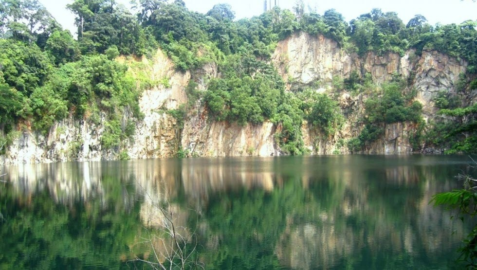

Nature

Bukit Timah Nature Reserve
The Bukit Timah Nature Reserve is a small 1.64 square kilometre nature reserve near the geographic centre of the city-state of Singapore, located on the slopes of Bukit Timah Hill, Singapore's highest hill standing at a height of 163.63 metres, and parts of the surrounding area.
 CE1, DT16 :Bayfront
CE1, DT16 :Bayfront  I love the nature.
I love the nature.
 Click here for more photos!
Click here for more photos!